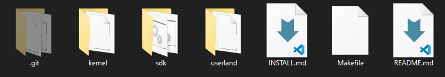

Git Intro

Git
Git is basically a tool for Version Control System (VCS). It is used to keep track of your project. It will keep track of all the changes you will make in your project. It is an open source project, developed by Linus Torvalds, the famous creator of the kernel of Linux operating system, in 2005. Initially, it was command line based and the commands were from Linux kernel. Due to its open source nature, its GUI interface has also developed. You can download git using this link Git Download. It is available for Windows, Linux and macOS.
This page will show you how to use Git using command line interface (CLI).
GitHub
Git will save your projects in your local machine. If you want to store them online, you have to use a hosting service. There are many hosting services like GitHub, GitLab, BitBucket etc. For this tutorial, we will use the most famous, GitHub. You can even download public projects of other users from GitHub. GitHub also provides many other functionalities.
 You can easily make an account on GitHub. Just go to the website www.github.com, and make an account.
You can easily make an account on GitHub. Just go to the website www.github.com, and make an account.
Git Commands
There are many commands in Git, but we will be using some basic commands like:
- git init
- git status
- git add
- git branch
- git remote
- git push
- git clone
Start Git
I have a project folder named "Hello Friend" with a file named "Hello.txt".
Now, I right click in this folder, and then on the option "Git Bash Here".
It will open a git terminal.
Git Init
It is used to initialize git. In other words, it will create a git repository on your local machine.
As you can see, a ".git" hidden folder has been created and there is that "(master)" written in the terminal. This shows that we are in an initialized folder.
Git Status
It is used to check the status of the local repository.
As you can see, there are words like "branch" and "commit". Don't worry, we will learn about these words very soon.
The output is saying that one file is untracked, which is the "Hello.txt" file. It is also saying that use some type of command to commit.
Git Add
It is used to add file(s) to the "Staging Area". The staging area is the area from where git starts to keep tracks of all the files in the folder. The files not included in staging area will not be tracked. Here, tracking means to keep tracks of all types of changes made to the files.
You can add all the files by using "." or specific files.
Now, if we again check the status, the output doesn't show "Untracked files" because all the files are in staging area. It is also showing the command to unstage files.
Now, I am adding a line in my file "Hello.txt". As it is in staging area, it must show the change. To check status, we will type "git status".
As you can see, it is showing that the file has been modified. Now, again type "git add ." to add this modified file to staging area, and check the status using "git status".
Git Commit
It is used to commit file(s). When you commit, it means that you are making a version of your project. It is like a restore point because you can come back to this point if you want. With the command, you also have to give a specific message related to that version. You can give message using "-m" switch.
Git Branch

There is a concept of branching in git. If you are making a project, and you have made some versions of it, a user can make a copy of your project at some version for itself to work on. It will make a branch. The changes on that branch will not affect the original project. If the user wants to merge his branch with original project, it will send a pull request to you. If you accept the request, the branch will be merged and the original project will be changed. At starting point, there is only one branch called "master" branch. In GitHub, it is now chnaged to "main" branch.
If we want to upload our project to the GitHub, we have to change the name of our branch from "master" to "main".

Now, you can see that "(master)" has been changed to "(main)".
Git Remote
This command is used to set the link, to where our project will be stored. The link will be of our remote repository on GitHub. For this, we first have to make a GitHub repository so that we can upload our project to that repository.
To make a new repository, click on the "+" button at the top right corner and click on "New repository" option.
You have to set a unique name for repository. You have other options like Description, Acsess, README file etc.
Click on "Create repository". A new repository will be created.
Now, copy the link of your repository.
Now, type the remote command and paste that link.
Git Push
This command is used to upload the project to your remote repository on GitHub. For the first time, a GUI window will popup and will ask for GitHub account password. For second time and onwards, it will not require password.
Now, if you go to your GitHub repository, refresh the page, you will now see files which you made on your local machine. In my case, one file "Hello.txt" will show with the message "My 1st commit".
You can explore other tabs and options given there.
GitHub will now store all your files that you will push to your repository and will keep track of it.
Git Clone
This command is used to download someone's project from GitHub. It just makes a copy of other user's project on your local machine.
Here is someone's repository naming "Operating-System"
Click on the "Code" button and copy the repository link.
Now, in the terminal type the command and paste the link.
You don't have to type any other command before this command. It is a single command process.

Conclusion
It might feel hectic for you at first because we are so attached to GUI. But with the passage of time, you will become comfortable with it. If you have any issue regarding installation of git or making account on GitHub or using commands, please seek help of Google and YouTube or ask the professionals.